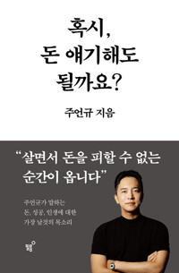

← 북클럽 홈

Book Club · 혹시 돈 얘기해도 될까요?
초대손님과의 나눔
💰 그리스도인의 재물관
🗓 2026-07-03(금)
⏱ 95분
🎙 인도 · 이승목 목사
🙋 초대 손님 · 사업가 집사님
돈은 목적이 아니라 소금 같은 도구입니다.
소금은 그 자체만 먹으면 짜고 해롭지만, 음식과 이웃에 연결(첨가)될 때 비로소 의미가 됩니다. 이날은 "사람 살리는 일"을 동기로 사업을 일궈 온 한 분이, 돈보다 미션이 사람을 행복하게 한다는 것을 자기 삶으로 증언했습니다.
이 책의 주제는 "기독교인이 돈을 어떻게 바라볼 것인가 — 인생 단계별 재정 기준"이었습니다. 이날은 책 나눔 대신, 삶으로 그 주제를 살아낸 초대 손님(돌봄기술 스타트업 대표 집사님)의 간증과 자유 문답으로 진행했습니다. (개인·회사 식별 정보는 익명 처리했습니다.)
01
"사람 살리는 일"을 동기로
간증
초대 손님은 2007년, 어머니가 다니던 작은 교회에서 설교 시간에 몰래 사업계획서를 쓰며 시작했다고 합니다. 첫 사업부터 지금까지 관통하는 동기는 하나였습니다.
- 중소상공인 온라인 홍보 플랫폼 (온라인 마케팅 1세대)
- 소셜커머스 초창기, 지방 기업으로 빠른 성장
- 현재는 어르신 돌봄 기술 — 데이터로 사람을 지키는 일
"누구는 우리 때문에 자살하지 않고, 우리 때문에 장사가 잘 돼서 — 그 '사람 살리는 일'을 동기로 삼고 시작했습니다."
02
위기와 회복 — 바닥에서 배운 용기
간증
- 개인정보 규제 위기로 잘 되던 데이터 사업 모델이 한순간에 무너진 경험.
- 가장 큰 위기 때는 큰 인수 제안을 거절하고 버티다 통장 잔고가 제로까지 갔고, 직원이 절반으로 줄었습니다.
- 그러나 극적으로 좋은 사람이 붙어 지금의 사업으로 옮겨 탔습니다. "하나님이 또 건져주시더라"
"6개월간의 공포가 엄청난 동력이 됐죠. 웬만해선 이제 겁을 먹지 않습니다. 다시 일어서는 용기 — 이걸 자녀들에게 꼭 가르쳐야겠다 싶었어요."
03
지금 하는 일 — 존엄한 삶의 끝을 지키는 기술
간증
독거노인의 고독사·고립·자살 예방이 현재의 사명입니다. 핵심은 비접촉·무자각 기술.
- CCTV·스피커가 아닙니다. 센서가 움직임·호흡·맥박을 감지해 프라이버시를 100% 보호하며 이상 징후만 포착합니다.
- 아침까지 무반응이면 AI가 감지 → 관제 확인 → 출동. 주 1회 전화(텔레케어)로 정서까지 살핍니다.
- 고위험 독거 어르신 대상 수년간의 실증에서 고독사 0명의 성과.
- 병원 원격 모니터링·보험·상조와 연계, 해외(고령화 국가) 진출도 준비 중.
함께 나눈 무거운 통계
연간 자살 약 1.5만 명(하루 38명, 노인 10.5명/일), 고독사 비공식 약 2만, 1인 가구 1,000만 육박. 고독사는 50~60대에 가장 많고 돈과 무관 — 혼자 사는 것 자체가 위험이라고.
"태어날 때 존엄하게 태어났으니, 돌아가실 때도 존엄하게 돌아가셔야 한다고 생각합니다."
04
돈에 대한 관점 — 목적이 아니라 소금
책의 은유
돈 = 소금. 소금만 먹으면 짜고 해롭습니다. 음식·재료·대상에 연결될 때 의미가 있듯, 돈도 모으기만 하면 행복이 꺾이고 이웃에·선한 재투자에 잘 첨가해야 의미가 됩니다.
자산과 행복. 일정 구간까지는 행복도가 오르지만, 지나치게 많아지면 온갖 것이 꼬여 오히려 힘들어진다는 연구도 나눴습니다.
간증
- "돈은 행복에 큰 영향을 주지만 목적이 되어선 안 됩니다. 어디에 쓰는지가 훨씬 중요해요. 돈 많은 분들 많이 뵀는데 대부분 안 행복하시더라."
- 투자 vs 투기 — "내가 잘 아는 것에 넣으면 투자, 모르는 분야에 무리하게 다 거는 건 투기다." (코인·주식도 동일)
- 행복의 조건은 미션 — "어르신들이 돈이 없어서 고독사하는 게 아니라, 미션이 없어서 — 하루에 할 일이 아무것도 없어서 그러시다고 하십니다."
05
인생 단계별 재정 기준
초대 손님이 스타트업 단계에 빗대어 제시한 나이대별 재정관 — 공동체가 함께 세워갈 기준.
| 단계 | 비유 | 재정 태도 |
|---|
| 청년기 | 시드(Seed) | 안전지향 말고 도전·창업. 실패해도 굶거나 큰 빚 지지 않는 시대 |
| 중장년 | 스케일업 | 경험이 쌓인 뒤엔 안정적으로 |
| 중년기 이후 | 엑싯·환원 | 벌어들인 것을 흘려보내기 — 착한 돈(ESG·소셜임팩트)으로 사회문제 해결 |
"청년들이 너무 안전지향으로 가는 게 안타깝습니다. 나라 지원도 좋아서 착한 돈으로 창업할 수 있는 최고의 시대예요."
06
"다음 세대는 청년이 아니라 시니어다"
간증
- 70세 은퇴 후 교회가 잘 챙기지 않는 현실 — "한국 교회를 일으킨 산 증인들인데."
- 농어촌 교회 후원은 '돈'이 아니라 '도구'로. 돌봄 도구로 어르신을 케어하면 자연스러운 전도·선교 접점이 됩니다.
- 교회가 시니어의 사명 재발견을 도와야 청년의 미래도 있다.
"나를 케어해 주면서 자연스럽게 전도할 수 있지 않습니까? 아마 자녀들도 교회로 오게 될 겁니다."
07
교회 청년들에게 — 창업·미션·AI
간증
- 창업 장려 — "아이템은 하나도 안 중요하다. 세상에 문제가 너무 많다. 동기·미션·문제해결 능력이 핵심이다."
- AI는 필수 — 개발·디자인·마케팅을 다 해준다. 채용·수습 때 AI 활용 능력을 반드시 본다.
- 채용 기준 — ①인성 ②태도 ③긍정·노력 ④AI 활용. "보통의 사람들로 위대한 일을 해보고 싶다."
- 핵심은 데이터 — 고객을 분석하고 정확히 기획하는 것. "데이터에 답이 있다."
08
자녀 교육과 가정 — 독립성, 관계의 '질'
간증
- 딸을 중1 때 기숙학교로 — "어차피 떠날 건데, 독립적으로 서게 하고 싶었다."
- 주 100시간 넘는 근무에도 관계는 질로. 함께 붙어 있는 게 사랑이 아니라, 자기 자리를 책임감 있게 지키는 것이 관계를 끈끈하게 한다.
- 아내에 대한 존중 — 필요하다 하니 자격을 따 사역을 함께 돕는다.
09
곁가지 — 함께 나눈 이야기들
나눔
- 고독사 현장의 목격담 — 매주 마주치던 이웃, 버튼 누를 힘조차 없이 홀로 떠난 분, 어릴 적 할머니와의 기억으로 시작한 말벗 봉사.
- 교회와 시니어의 딜레마 — 어른 공경 사역은 해왔지만, 모으면 시너지보다 더 많은 케어가 필요해지기도. 청년처럼 '뚫어내는 롤모델'이 관건.
- 공공 서비스의 허점 — 형식적으로 지급된 기기가 정작 위급 때 작동하지 않는 현실.
- 혼자 계신 부모 걱정 — 여러 참석자가 공감하며 서비스의 절실함을 나눴습니다.
Q
우리에게 주는 질문
함께 곱씹기
- 나는 돈을 '목적'으로 보는가, '도구(소금)'로 보는가?
- 내 인생 단계의 재정 기준은? — 도전할 때인가, 안정할 때인가, 흘려보낼 때인가.
- 나는 아는 것에 투자하는가, 모르는 것에 투기하는가?
- 우리 교회는 어르신(시니어)을 어떻게 존중하고 품을 수 있을까?
- 돈보다 나를 살아 있게 하는 나의 '미션'은 무엇인가?
🙏 기도제목
- 인간의 존엄 — 한국 교회가 이 교회를 일으킨 은퇴 목사·장로·선교사 등 산 증인들을 존중하도록. "그래야 청년의 미래가 있다."
- 초대 손님의 건강과 사업의 축복 — 더 많은 생명을 살리는 영향력으로.
- 북클럽 각자에게 주신 마음(꿈·결단)이 가벼이 여겨지지 않고 현실이 되도록.
개인·회사 식별 정보는 익명 처리했습니다 · 교회 내부 나눔용 정리본